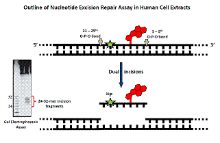

OBJECTIVES
Human genomic DNA is under constant assault by endogenous reactive oxidizing chemical species present in the human body and by environmental contaminants that are metabolized to reactive intermediates that bind covalently to DNA bases. If not removed by cellular defense systems (DNA repair), these DNA lesions will interfere with the transcription and replication of DNA and can cause the mutagenic insertion of the incorrect bases in the RNA transcripts and newly synthesized DNA molecules. An accumulation of such mutations can lead to cancer. Understanding the detailed mechanisms of these phenomena may led to novel strategies for preventing this and other genetic diseases that are caused by the chemical alterations of normal DNA, as well as the design of more effective chemotherapeutic drugs. The overall objectives are to understand the formation and the removal of DNA lesions by cellular defense mechanisms.

A polynuclear aromatic hydrocarbon metabolite lesions (in red) embedded in DNA in a nucleosome, the fundamental building block of chromatin.
(Courtesy: Y. Cai and S. Broyde)
FOCUS / HYPOTHESIS
Our laboratory emphasizes studies of DNA model systems that are based on well defined oligonucleotides with single, chemically characterized, modified nucleic acid bases (DNA lesions) embedded either in protein-free DNA, or in DNA associated with nucleosomes, the building blocks of cellular chromatin. Our major interests are to relate the structural features of DNA lesions to their recognition and removal by the human nucleotide excision repair (NER) system. The eukaryotic NER apparatus removes an astounding variety of chemically and structurally different DNA lesions, but with variable efficiencies – while many lesions are removed efficiently, some are resistant to NER. Our hypothesis is that the efficiency of NER is dictated by the repair-initiating recognition step that involves the binding of a specialized protein dimer to the DNA lesions, and that this step depends on the local distortions and destabilization of the local, normally double-helical, hydrogen-bonded base pair structure.

NER assay in human cell extracts
APPROACH / METHODOLOGY
The DNA lesions being studied include those derived from cellular metabolites of polynuclear aromatic hydrocarbons (PAH) that are environmentally ubiquitous fossil fuel combustion products, heterocyclic aromatic amines that are present in broiled and other foods cooked at high temperatures, equine estrogens present in hormone replacement therapy (HRT) formulations, and small reactive free radical intermediates that are generated in cells during the inflammatory response. Our approach is interdisciplinary that involves the synthesis and purification of site-specifically modified oligonucleotides containing single, well defined lesions in defined base sequence contexts, their structural characterizations by solution NMR and other thermochemical and biophysical techniques, and nucleotide excision repair assays in human cell extracts, or using purified enzymes. In order to explore the molecular bases of structure-DNA repair efficiency relationships, we are relying on computational and molecular modeling techniques in collaboration with Professor Suse Broyde (Biology Department, NYU).

Intercalated PAH hydrocarbon derivative in DNA